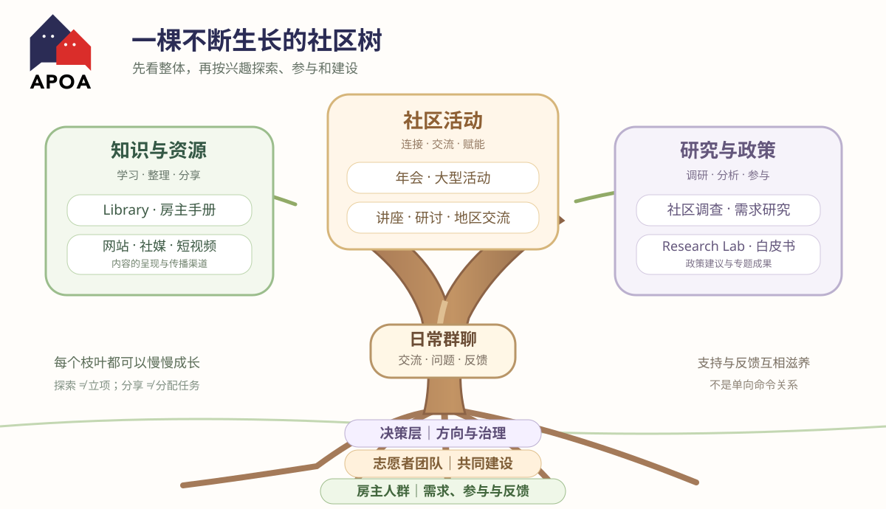

先搭框架，再长枝叶：社区项目为什么需要一张地图？
From Ideas to a Growing Community
有时候，今天分享图书馆，明天研究网站，后天又想到活动、调查或 AI 工具。分享者觉得是在试试不同的可能性，其他人却可能以为每天都有新任务。这种误会，也许只差一张清楚的整体地图。

一、为什么分享想法会变成别人眼里的工作任务？
一个人经过很多轮试验，脑中已经有了整体框架，因此能很自然地在 Library、Website、Community Wall、短视频和 Grant Radar 之间切换。但其他志愿者只看到了每天发出来的一小段成果，不知道它属于哪个方向、目前只是试验，还是已经决定推进。
因此，分享前补一句说明很有帮助：“这是一次探索，不代表项目已立项，也暂时不需要大家做什么。”探索者可以继续保持好奇心，其他人也不必承担额外压力。
二、造房子与种大树：两种互补的比喻
把社区当作一栋房子，我们会先考虑地基、结构、房间和通道：图书馆是知识空间，活动是交流空间，网站和社媒让更多人找到这些内容。房间可以先搭出轮廓，再慢慢添置内容。
把社区当作一棵树，则更能看到相互滋养：房主人群提供需求和参与，志愿者团队共同建设，决策层提供方向、资源和治理；日常群聊持续带来问题、交流和反馈。知识、社区活动以及研究与政策，向不同方向生长，却仍属于同一棵树。
树上有些枝条长得快，有些还需要时间；叶子和果实又能带来新的参与和养分。比喻的重点不是层级高低，而是彼此依赖、共同成长。
三、先发散探索，再选择投入
英国 Design Council 的 Double Diamond（双钻石）创新框架提出四个阶段：Discover（发现）、Define（定义）、Develop（发展）、Deliver（交付）。其中既有广泛了解需求、尝试不同答案的发散阶段，也有集中确定问题与测试可行方案的收敛阶段。
放到社区项目里，就是先允许大家提出多个可能性，做一些小样本；再根据真实需求、志愿者意愿和资源，决定哪些值得进一步建设。多探索，不等于多承诺。只有明确了下一步责任与条件，想法才逐渐走向正式项目。
四、让贡献者找到自己的枝条
WordPress 的开源社区有设计、文档、培训、社区等不同贡献团队。它提醒我们，组织不必要求所有人具备同样的技能，也不必人人参与全部工作。
有人喜欢参加活动，有人愿意整理资料，有人擅长调查和分析，还有人乐意协助传播。对志愿者来说，最重要的是知道有哪些选择、当前是否需要参与，以及参与的边界是什么。项目地图首先是一份邀请，而不是派工表。
五、给每个“坑”标上状态
无论使用房屋还是树木的比喻，地图都应该告诉大家哪些是想法，哪些已经开始建设。可以试用四个清楚的标签：
先记录问题和机会，不代表已经有人负责。
尝试一个小样本，看看有没有价值。
明确负责人、范围、资源和下一步安排。
已经提供内容或服务，持续维护和改进。
例如分享图书馆的新功能时，可以标注“知识与资源 → Library → 功能探索 → 欢迎体验、暂无任务”；筹备专业讲座时，则需要明确讲师、组织者、时间和所需支持。不同状态采用不同管理方式。
六、让整张地图随着社区一起成长
这张图不必第一天就画得完美。项目可以新增、调整或暂停；不同参与者也可以在有时间时贡献一点，暂时忙碌时保持关注。最重要的是让大家知道整体方向、当前进展和参与入口。
“小猫挖坑”保留了探索的快乐，“造房子”提醒我们考虑整体结构，“社区成长树”则让我们看见人与项目之间的长期联系。三种说法最终指向同一件事：方向清楚，开放探索，找到需要且有人愿意做的项目，再逐步把它建设起来。
原始资料与相关阅读
- Design Council — The Double Diamond：四阶段创新过程及发散、收敛思考。
- Make WordPress — Contribution Teams：开放式项目贡献的不同团队。
- APOA 社区图书馆 — 志愿者参与金字塔：每一种参与都有价值。
- APOA 官方品牌资料 — Logo 使用规范（正式图形未作重新设计）。
本篇为社区项目管理与创新方法的学习整理。树形关系、四种项目状态和 APOA 场景是编辑者用于帮助理解的示例，并非外部资料的原话，也不构成 APOA 已批准的组织制度、决议或人员职责安排。